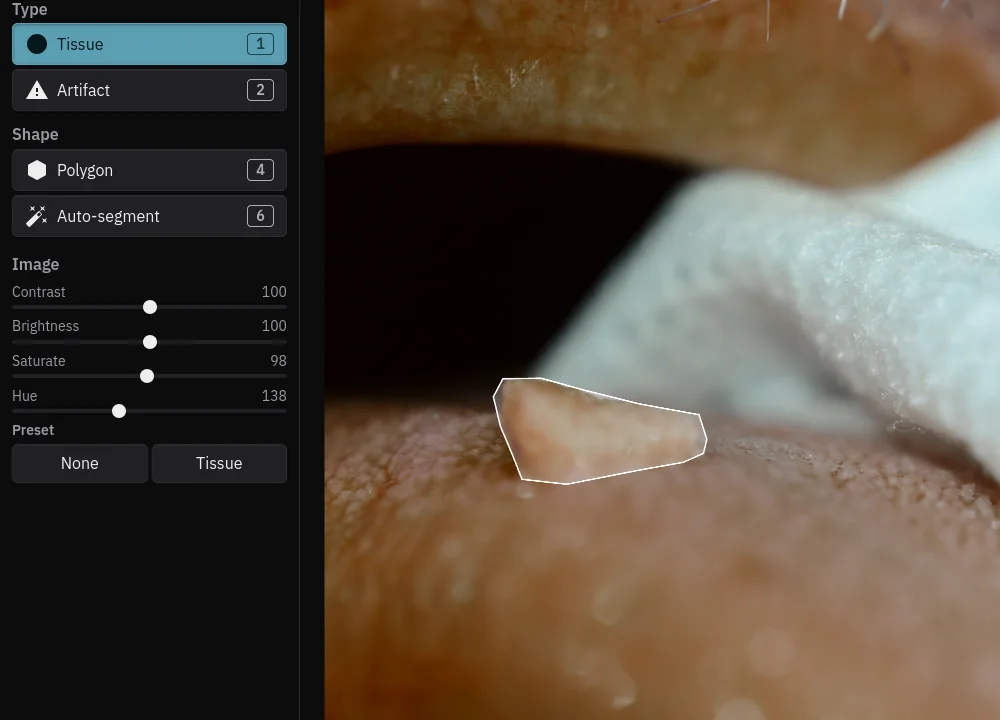
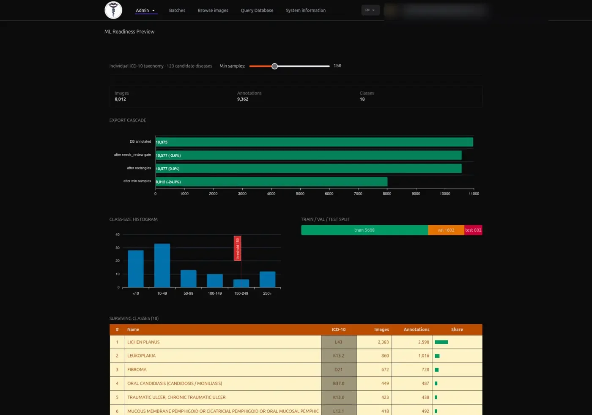
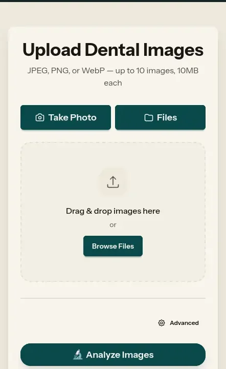

Case study 01 / Clinical AI platform
The system around the model.
Diagoradisa takes a clinical photograph from upload to a case-level suggestion. Four services, one developer, in production since August 2025.

01 / Context
What it is.
Diagoradisa is a clinical AI platform for oral pathology. A clinician uploads one or more photographs of a lesion. The platform stores them, routes them through a Python model service, aggregates detections across views, and produces a case-level suggestion and a report.
The model is a tool, not an oracle. The interface shows the images, the views analysed, and the confidence. The clinician makes the call.
An annotation tool, a dataset pipeline, a model server, and a clinician app — built as one system.
02 / Constraints
What made it hard.
01
One developer.
Four repositories, 1,629 commits, no handoff. The annotator, the ML service, the clinician app, and the deployment layer were all mine.
02
Clinical safety.
A wrong suggestion is worse than no suggestion. The system has to show its work: the image, the views, the confidence, and the misses.
03
Small, imbalanced data.
18 classes survived the 150-image minimum. The readiness preview lists 64 dropped classes. The tail is the hard part, and more architecture does not fix it.
03 / Architecture
Four services, three contracts.
Every service owns one job. The seams are explicit, because that is where one-person systems usually fail.
-
01
Annotator
Dataset creation
Laravel 12
OpenSeadragon · Annotorious
MariaDB -
02
ML service
Training and inference
Python · FastAPI
Ultralytics YOLO
29 endpoints -
03
Palmist
Clinician surface
Laravel 12 · Livewire 4
Tailwind 4 · DaisyUI 5
PDF · Excel -
04
Meta
Infrastructure
Docker · Apache
Bash
Backups · headers
Contracts: the annotator exports EXIF-normalised images and labels. The ML service returns checkpoints and predictions. Palmist sends images and receives detections. Meta wraps all four.
04 / Surfaces
Four surfaces, one workflow.
The same case moves through annotation, training, inference, and reporting. These are the screens where that happens.

Annotator
Dataset creation
A production tool for marking lesions at speed, with the guardrails a clinical dataset needs.
- Deep zoom on OpenSeadragon; polygon and rectangle annotation.
- ICD-10 lookup with Greek and English labels.
- Batches, role-based access, and per-image progress.
- ML-readiness dashboard for class balance and export.

ML service
Training and inference
The model is served, not baked into the app. Runs and checkpoints are first-class objects, so a model can be compared, assessed, and swapped.
- 29 API endpoints for upload, prediction, runs, and reports.
- Run and experiment model with compare and assess reports.
- Model hot-swap without a redeploy.
- SAM 2 endpoint for assisted masks.


Palmist
Clinician surface
The part the clinician touches. Upload, review, decide, export. It has to work on a phone at the chair.
- Multi-image case upload, up to ten views.
- Case-level aggregation across views.
- PDF and Excel reports.
- Greek and English labels, including ΛΕΥΚΟΠΛΑΚΙΑ.
- Deploys
- Container builds, Apache, migrations.
- Proxy
- Reverse proxy and security headers.
- Backups
- Scheduled database and file backups.
- Scope
- Four services, one deployment path.
Meta
Infrastructure
The unglamorous layer that keeps the other three honest. If a deploy needs a manual step, it is not finished.
- Container deploys and reverse proxy.
- Backups, security headers, and migrations.
- One path from commit to running service.
05 / Failures
Three things that did not work.
The part most portfolios leave out. Each one changed the system.
01
754 / 10,575 images · 7.1% · +0.048 box mAP@50 · +0.073 recall
EXIF orientation corrupted 7.1% of labels.
A quarter-turn in the camera metadata moved the lesion but not the polygon. The compare report showed masks that no longer sat on the image. It was not a model bug; the labels were wrong before training.
I normalised every image to its EXIF-applied size, rebuilt the dataset, and retrained. The fix lifted box mAP@50 from 0.460 to 0.508 and recall from 0.423 to 0.496.
Result: clean labels, and a check that now runs before every export.
02
four lever sweeps · RF-DETR NO-GO · 51 vs 12 background false positives
Detection recall plateaued at ~0.49.
I swept four levers: label-space collapse, size diagnostics, a 1024 px retrain, and lichen reweighting. All four closed without a durable gain. The next hypothesis was architecture, so I A/B tested RF-DETR against YOLO on clean ground truth.
RF-DETR produced 51 background false positives against YOLO's 12. That was a NO-GO. The conclusion was to acquire data, not change architecture.
Result: the model stayed, the data plan changed.
03
ON/OFF A/B · 210 cases · ~0.6% of detections touched
A clinical safety layer added no value.
I shipped a gate engine that was meant to suppress risky detections. An on/off A/B on 210 cases showed it touched about 0.6% of detections and produced no net benefit. A safety feature that does not change outcomes is still a maintenance cost.
I removed the gate engine, the flag, the API fields, and the loader. It was gone on 16 June 2026.
Result: less code, and a clearer product.
06 / Evidence
The clean test set.
876 images held out from training. The production operating point is confidence 0.25.
- Box mAP@50
- 0.508
- Mask mAP@50
- 0.514
- Precision
- 0.620
- Recall
- 0.455
- Model
- yolo26l-seg
- Input / epochs
- 640 px / 250
- Split
- 8,774 images · 6,143 train / 1,755 val / 876 test
- Dataset
- 10,575 images · 9,362 annotations · 18 classes
- Run
- yolo26l-seg_640_b32_lr0.005_e250_20260614_181629
| # | Ground truth | Model output | Best conf | Views | Tier | Verdict |
|---|---|---|---|---|---|---|
| 1 | Leukoplakia | Leukoplakia | 94.1 | 4 / 4 | HIGH | Correct |
| 2 | Oral lichen planus | Oral lichen planus | 71.5 | 2 / 6 | MEDIUM | Correct |
| 3 | Mucocele | Mucocele | 93.4 | 3 / 3 | HIGH | Correct |
| 4 | Stevens–Johnson syndrome | Oral lichen planus | 89.1 | 2 / 3 | HIGH | Wrong |
| 5 | Fibroma | Papilloma | 87.9 | 3 / 3 | HIGH | Wrong |
| 6 | Chronic traumatic ulcer | None | 58.1 | 0 / 2 | LOW | No diagnosis |
| 7 | Aphthous ulcers | None | 77.3 | 0 / 4 | LOW | No diagnosis |
| 8 | Geographic tongue | Oral lichen planus | 93.1 | 3 / 4 | HIGH | Wrong |
| 9 | Leukoplakia | None | 0.0 | 0 / 2 | LOW | No diagnosis |
| 10 | Traumatic ulcer + leukoplakia | Leukoplakia | 93.2 | 4 / 4 | HIGH | Correct (partial) |
Ten cases is a product test, not a validation study. The model is bimodal: it fires above 85% or not at all. Verdicts follow the case result, not a re-scored threshold.
07 / Next
What I would do next.
The architecture is not the bottleneck. These are the next three moves.
01
Acquire data in the tail.
The plateau was not an architecture problem; the RF-DETR A/B confirmed it. The next gain is more images and better coverage of rare classes.
02
Run a proper validation study.
Ten cases is a product test. An independent, larger set would turn the numbers into a claim.
03
Keep the clinician in the loop.
Show the views, the confidence, and the misses. A suggestion the clinician can audit is more useful than a confident one.